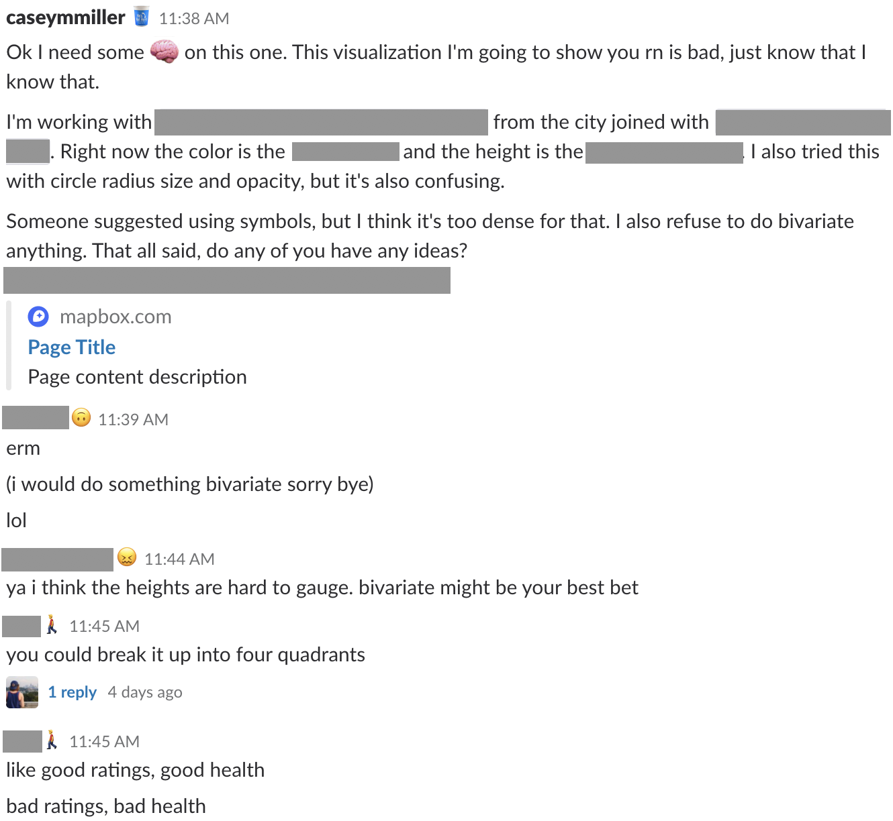

Who we are
You, me, us.
- freelancers
- lonely coders
- minority journalists
- students
- new hires
- part of a small team
- part of a large team
- etc, etc


Think on your idea overnight, let it ruminate a bit, and come back to it in the morning.

If you have friends in the industry, hit them up for feedback on ideas!
Talk to your colleagues. Even if they aren’t on the same team or in the same field, they might have some valuable ideas! Chances are the user of your product or reader/viewer of your story isn’t going to be a visual journalist, so this could work in your favor.
Don’t be afraid to reach out to others online/in Slack!
P.S. I ended up using a bivariate color scheme
Find someone who is a consumer of news, but who doesn't work in the media industry, to take a look at your project or listen to your pitch. These are the people you're trying to reach with your story. Finding out what they think early on could prove very helpful.

It’s easy to fall into a rabbit hole when working in isolation. Don’t forget to take a second to get a gut check from an outside viewer. Having a standing meeting can be great for this (we have one on Monday afternoons) or it could even be as easy as setting a Slack reminder:
/remind me to check in with Lo on my project at 1pm PST every Tuesday
Maybe it’s an old boss or former colleague. Maybe it’s someone you went to school with or met at a conference. Find someone you trust to critique your work and use that connection to your advantage.

This can understandably be difficult if you’re on a deadline, but if you have an extra day or two to play with data and/or mess around with a visualization, you might be able to come up with something even better than what you originally planned. Don’t tie yourself to the first idea you come up with!

Add your own idea! 📝
Close form
These are real issues that a lot of us face every day, and we're happy to talk more about it! Come find us here at SRCCON, on twitter as @lobenichou and @caseymmiller, or on the News Nerdery slack!